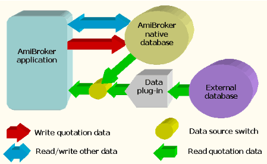
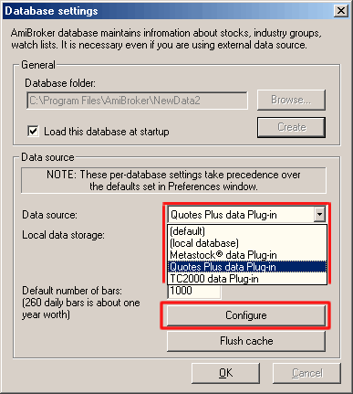

A typical Windows application, for example, Paint, works with a single file. You just open and save that single file (.BMP in Paint, or .DOC in MS Word), and that file holds all the necessary information.
AmiBroker is a more complex piece of software. It uses huge amounts of data (all quotes from different tickers, hand-drawn studies, assignments to groups, markets, watch lists, favorites, industries, sectors, etc.), so it must manage multiple files.
It would actually be possible to save all this information in a single file, but it would be (a) huge and (b) slow to update selectively. Therefore, AmiBroker uses multiple files for storing all the data. There are a lot of files associated with any database. The files for a particular database are stored in a directory (and its subdirectories) specific to that database. In AmiBroker documentation, such a directory is referred to either as a "database directory" (version 3.9 or later) or as a "workspace directory" (earlier AmiBroker versions).
When you install AmiBroker for the first time, a default database directory is created, called 'data' in the AmiBroker directory. This database directory contains a sample Dow Jones Industrial Average database.
In AmiBroker's database menu and dialog selections, you are choosing or creating a database directory, not an individual file.
A database (or a workspace) is a directory that holds a set of binary files, which are stored in 0-9, a-z, and '_' subdirectories. These binary files hold quotes, symbol information, your studies (trend lines, Fibonacci studies). Each symbol's information is stored separately in a file named after the ticker symbol, located in the subdirectory corresponding to the symbol's first character, thus IBM quotation data/studies are stored in the 'IBM' file located in the 'I' subdirectory.
The default database for AmiBroker is the 'data' directory. It contains DJIA sample data. You may create additional databases in other directories via the File->'New database' menu.
In addition to these subdirectories and files, two additional files are created by AmiBroker: broker.workspace and broker.master. The first is used to store category names and information about advancing/declining/unchanged issues. The latter stores the table of all symbols that is used for quick loading of the database. These two files are located in the root directory of each database, the 'data' directory, by default.
In almost all cases, you should not touch files in an AmiBroker database, as the program manages them automatically, and no user intervention is required.
AmiBroker 3.9 has the ability to read quotes directly from an external data source. Currently, AmiBroker can read directly from Quotes Plus (QP2), TC2000 (TC2K), and Metastock (MS) databases. This is achieved by means of data plug-ins that AmiBroker uses to read the data from an external data source. When a user decides to use an external database, AmiBroker, instead of reading quotes from its own database, simply asks the plug-in for quotes for any given symbol. The plug-in reads the external database and feeds the data to AmiBroker. The whole process is shown in the picture below:

As you can see, data plug-ins provide read-only access to the quotes in the external database. This means that your external data sources are never modified by AmiBroker. Changes or additions that you make to data and charts (like hand-drawn studies, assignments to categories, etc.) are always saved in AmiBroker's own database. Therefore, AmiBroker still uses its own database (to save changes, as a cache to speed up access, and for other tasks), even when using an external data source.
The data source switch represented in the graphic above can be set by the user to access various external databases. External data sources are selected by going to the File->'Database Settings' dialog, shown below:

You may also choose to store the quotes retrieved from the external source to AmiBroker's own database for faster retrieval in subsequent accesses. If you want to do this, you should switch the 'Local data storage' setting to 'Enabled'.
Note: Similar settings can be found in the Tools->Preferences 'Data' tab,
but these are only defaults used when creating new databases. File->Database
Settings configurations always take precedence over those done in Preferences -- EXCEPT in the following cases: If you choose the 'Default' entry in the Data Source dropdown list (shown above), or the 'Default' radio button for Local
Data Storage (also shown above), AmiBroker will use your Preferences settings
for those items.